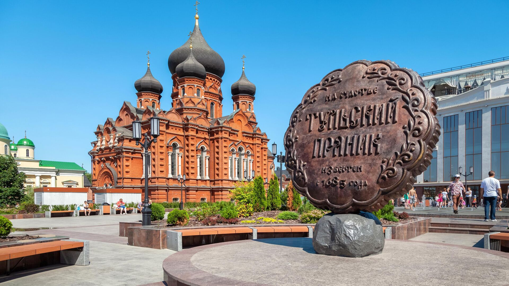

Представляем проект "Чистый город 2.0"
Чистый город 2.0
«Чистый город 2.0» — программа по мотивации и сопровождению жителей города Тулы по раздельному сбору вторичного сырья.
Наша цель —
заинтересовать людей темой раздельного сбора мусора и сделать наш город более чистым.
Узнайте о нашем проекте более подробно!
 Про проектГлавные вопросы
Какие цели?
1 цель - заинтересовать жителей города в сортировке мусора.
2 цель - оборудовать территорию
для раздельного сбора мусора.
Проблема?
Незаинтересованность жителей в сортировке мусора.
Ради чего?
Ради благоприятной экологической обстановки города.
Места сдачи вторсырья
Знакомство с командой